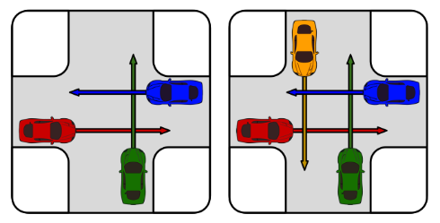
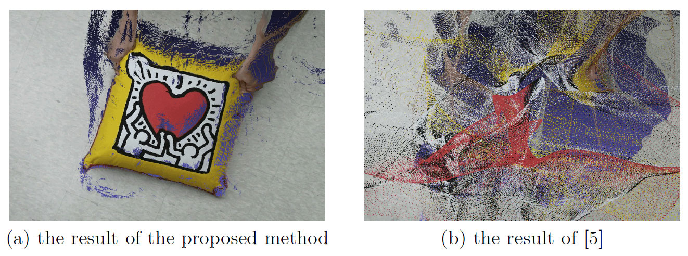
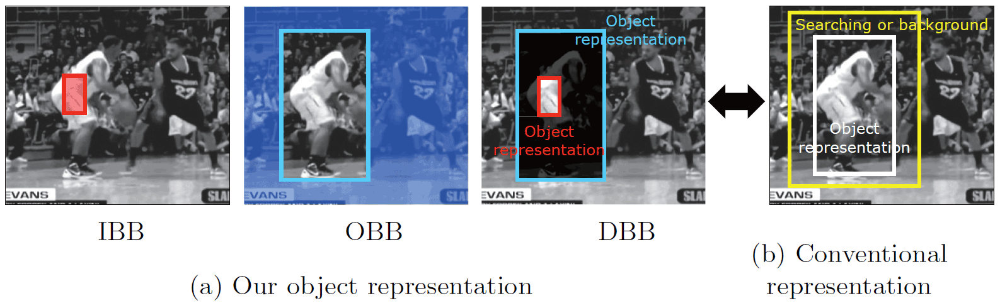
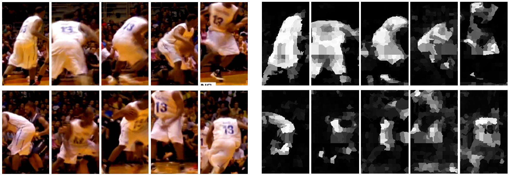

I am a graduate student in Allen School of Computer Science and Engineering at the University of Washington advised by Ali Farhadi and Dieter Fox and supported by Samsung Scholarship. My research focuses on deep learning based robotics and vision applications. Previously, I worked as a researcher at Korea Institute of Science and Technology. I received MS in Electrical Engineering and Computer Science and BS in Electrical and Computer Engineering at Seoul National University, advised by Kyoung Mu Lee.
Publications

Multimodal Trajectory Prediction via Toplogical Invariance for Navigation at Uncontrolled Intersections
CoRL 2020


